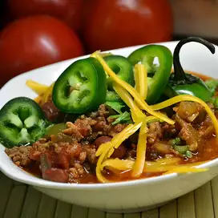

Beef Stew

- 2 lbbeef stew meat, cubed & cut in half
- 12 oz bag of frozen corn
- 12 oz bag of frozen peas
- 12 oz bag of frozen green beans
- 6 md potatoes, cut in bite size pieces
- 1 14.5 oz can of delmonte diced tomatoes w/ basil, garlic, & oregano
- 1 lg onion, finely chopped
- 2 pkg beef stew mix
- 4 beef bouillon, cubes
- 2 tsp salt and pepper
- 8 c water
- 2 pkg brown gravy mix (this will thicken the sauce)
- 1 pkg chopped mushrooms
- 3 Tbsp garlic salt
Steps
- Brown meat on stove in a skillet on medium heat.
- Add remaining ingredients (except the brown gravy mix), in a Dutch Oven or a very large pot. Stir to combine all ingredients.
- Stir every 30 minutes, so it will not stick to the pot.
- Cook uncovered on medium high for 1 hour to let the veggies cook and then turn the stove on low and then add the cooked meat.
- Mix in the 2 packages of brown gravy mix.
- Cook for another hour.
- If you want to add noodles or rice you can. But it tastes good without.
- Enjoy!!!!